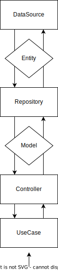

Manuale
Panoramica
Questo è un tool che permette di effettuare operazioni su articoli di giornale provenienti da più fonti.
Il programma consente di:
- Scaricare uno o più articoli da diverse fonti locali o remote, salvandoli su disco in un formato comune.
- Estrarre da fonti locali o remote, o dal risultato di un download precedente, i termini più ricorrenti, salvandoli in ordine di frequenza in un file di testo.
- Scaricare gli articoli ed estrarre le parole in un'unica operazione.
Opzioni
È possibile specificare le seguenti opzioni, a seconda dell'operazione da effettuare:
- fonte
- nome file di output articoli
- filtri di ricerca
- filtri temporali
- numero di articoli
- nome del file di output termini
- numero di parole da estrarre
- estrarre lemmi o solo parole senza punteggiatura
Fonti
Le fonti attualmente supportate sono:
- The Guardian API
- The New York Times CSV
- File provenienti da un download precedente
Architettura

I componenti software dell'architettura sono suddivisi in 4 layer, la cui interazione è bidirezionale. Partendo dal lato utente:
- UseCase: contiene l'operazione da eseguire. Invoca Controller per iniziare la logica di esecuzione.
- Controller: contiene gli elementi che permettono di gestire il flusso di esecuzione dell'operazione. Interagisce con il livello superiore tramite Model.
- Repository: contiene gli elementi che permettono di interagire con le fonti. Interagisce con il livello superiore tramite Entity.
- DataSource: contiene gli elementi che permettono di interagire con i dati.
Design pattern
Sono stati utilizzati i seguenti design pattern:
- Strategy
- Factory
- Singleton
- Adapter
- Builder
- Facade
- Thread pool
Dettagli implementativi
È stata posta particolare attenzione a:
- Performance: per le operazioni più onerose (chiamate multiple API ed elaborazione di molti testi) è stata implementata la computazione parallela su più thread. Inoltre, è presente un sistema di cache in memoria che agevola l'interazione tra parti del programma diverse che richiedono lo stesso dato durante l'esecuzione.
- Flessibilità: ogni layer dell'architettura è stato progettato per agevolare la manutenzione e l'estensione del programma, fornendo un'interfaccia comune per ogni componente.
- Modularità: il software è stato progettato in modo da suddividere tutte le sue componenti in moduli indipendenti, che svolgono un compito ben preciso, senza dipendere da altri moduli.
Build
Maven
La build produce un file jar eseguibile.
Requisiti minimi
- JDK 8
- Maven 3.3.1
mvn clean package -DskipTests
ⓘ️ L'opzione
-DskipTestspermette di saltare l'esecuzione dei test e velocizzare la build.
Dockerfile
La build produce un'immagine Docker.
Requisiti minimi
- Docker 17.06.0
docker build -t eis-app .
ⓘ️ L'opzione
-tpermette di specificare il nome dell'immagine Docker.
Esecuzione
Jar
L'esecuzione richiede il file jar prodotto dalla sezione precedente.
java -jar <jarfile> <source> [options]
<source> Source (required)
theguardian The Guardian API
path/to/file.json Input file JSON
path/to/file.csv Input file CSV
[options] Options (optional)
-ca,--count-articles <integer> Number of articles (default 10)
-ct,--count-terms <integer> Number of terms (default 50)
-d,--download Download only
-e,--extract Extract only
-f,--from <date> From date
-h,--help Print this message
-k,--api-key <string> API key
-l,--lemma Terms are lemmas
-oa,--output-articles <file> Output articles file name (default "articles.json")
-ot,--output-terms <file> Output terms file name (default "terms.txt")
-q,--query <string> Search query
-t,--to <date> To date
ⓘ️ In alternativa all'opzione
--api-keyè possibile specificare la variabile d'ambienteTHE_GUARDIAN_API_KEYper The Guardian API.
Docker Compose
Requisiti minimi
- Docker 17.06.0
- Docker Compose 1.13.0
Modificare il file docker-compose.yml con le opzioni desiderate seguendo la sintassi riportata nella sezione Jar ed eseguire il comando seguente.
docker compose up
ⓘ️ Non è necessario generare l'immagine Docker in precedenza poichè automaticamente costruita da Docker Compose se non già presente nel sistema.
Test
Test unitari
I test unitari sono stati implementati con JUnit 5.
mvn test
ⓘ️ Per eseguire i test di The Guardian API è necessario specificare la variabile d'ambiente
THE_GUARDIAN_API_KEY.
Report
Il report dei test viene generato nella cartella target/surefire-reports.
mvn surefire-report:report
Documentazione
Javadoc
I Javadoc vengono generati in formato HTML nella cartella target/site/apidocs.
mvn javadoc:javadoc
Test
I Javadoc dei test vengono generati in formato HTML nella cartella target/site/testapidocs.
mvn javadoc:test-javadoc
JaCoCo
Il report della copertura dei test JaCoCo viene generato nella cartella target/site/jacoco.
mvn jacoco:report
Maven Site
Tutta la documentazione completa, inclusi i report delle sezioni precedenti, possono essere generati in formato HTML nella cartella target/site.
mvn site
Librerie utilizzate
Le librerie utilizzate sono:
- Apache Commons CLI v1.5.0: libreria Java per la gestione di opzioni da riga di comando.
- CommandLine: classe che rappresenta una linea di comando.
- CommandLineParser: interfaccia che definisce il metodo
parseper il parsing di una linea di comando. - DefaultParser: classe che implementa l'interfaccia
CommandLineParsere permette di effettuare il parsing di una linea di comando. - Options: classe che rappresenta un insieme di opzioni.
- Option: classe che rappresenta un'opzione.
- HelpFormatter: classe che permette di stampare un messaggio di aiuto.
- ParseException: classe che rappresenta un'eccezione generata durante il parsing di una linea di comando.
- OkHttp v4.11.0: libreria Java per la creazione di client HTTP.
- OkHttpClient: classe che permette di effettuare richieste HTTP.
- HttpUrl: classe che rappresenta un URL HTTP.
- Request: classe che rappresenta una richiesta HTTP.
- Response: classe che rappresenta una risposta HTTP.
- Apache Commons CSV v1.10.0: libreria Java per la gestione di file CSV.
- Gson v2.10.1
- JsonParser: classe che permette di effettuare il parsing di un file JSON.
- StanfordCoreNLP v4.5.4: libreria Java per il Natural Language Processing.
- StanfordCoreNLP: classe che permette di effettuare il parsing di un testo.
- CoreAnnotations: classe che contiene le annotazioni disponibili.
- CoreLabel: classe che rappresenta un token.
- RedwoodConfiguration: classe che permette di configurare il logger.
- JUnit v5.10.0-M1: libreria Java per l'esecuzione di test.
- Assertions: classe che contiene i metodi per effettuare gli assert.
- Test: annotazione che permette di definire un metodo di test.
Note
Il progetto è compatibile con Java 8 però, dopo aver effettuato vari test con differenti versioni del linguaggio, la versione consigliata è la 11 o successiva per via di una differenza di performance in fase di estrazione dei lemmi.
Le features sfruttate dalle nuove versioni sono:
- ottimizzazione del garbage collector
- miglioramento del compilatore
- miglior gestione delle stringhe
Di seguito è riportato un test che mostra a grandi linee la differenza di performance tra le due versioni.
Test Java 8 vs Java 11
Il test consiste nel leggere un file The New York Times CSV contenente 1000 articoli ed estrarre 50 lemmi.
Comando
java -jar app.jar file.csv -ca 1000 -ct 50 -l
Risultati
Sono state effettuate 10 esecuzioni per versione di JDK.
| OS | Architettura | Eclipse Temurin 8 | Eclipse Temurin 11 |
|---|---|---|---|
| Windows 11 | x64 | 14.1 secondi | 7.2 secondi |
| MacOS 13.4 | aarch64 | 59.6 secodi | 11.9 secondi |
| Oracle Linux 8.6 | aarch64 | 15.2 secondi | 13.0 secondi |
ⓘ️ JDK Eclipse Temurin 8 MacOS aarch64 non disponibile, è stata utilizzata la versione x64.